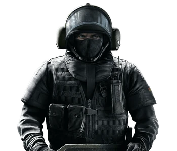

Elias "Blitz" Kötz
"I don't like photos of myself. The lighting is always wrong.
Gameplay Description
A Medium Armored Operator, Blitz's unique gadget is the G52-Tactical Shield, a Ballistic Shield loaded with forward-facing flash charges that Blitz can manually detonate, blinding anyone within the Shield's range. Unlike other Shield Operators, Blitz can also wield his shield up while sprinting.
Device Description
Triggers the flash attached to his ballistic shield to temporarily blind enemies.
Kötz has been a fan of flashbang entry methods since joining the Schnelle Kräfte, preferring to disorient to limit collateral damage, unlike other explosive entry methods. The G52-Tactical Shield allows Kötz to quickly advance after firing a row and remain protected from frontal attacks as he moves to aid teammates or hostages.
Inspired by ballistic shields fashioned with strobe lights, the G52-Tactical Shield takes this technology one step further. By replacing a high-intensity light source with three rows of eight flashbang grenades, the G52 allows for a bold and calculated entrance where the aim is to incapacitate rather than maim potential targets.